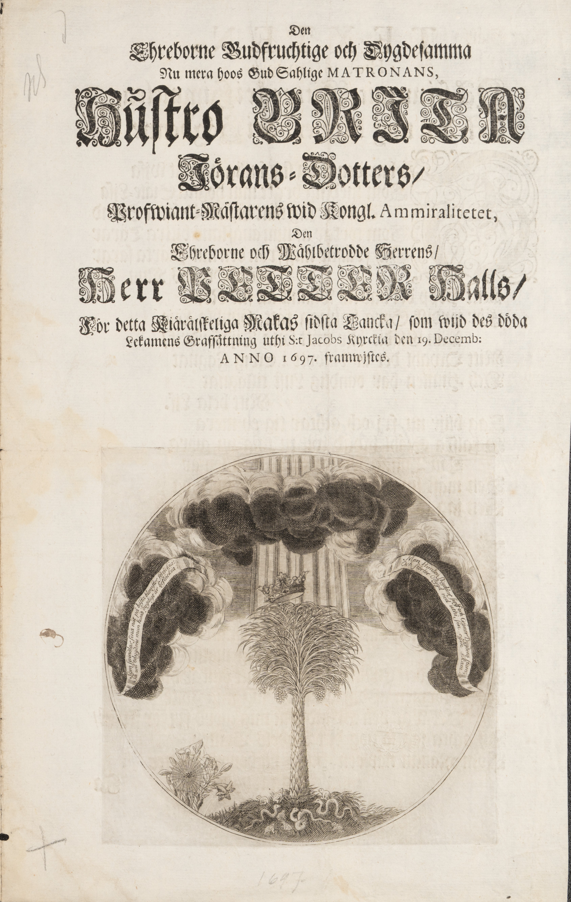
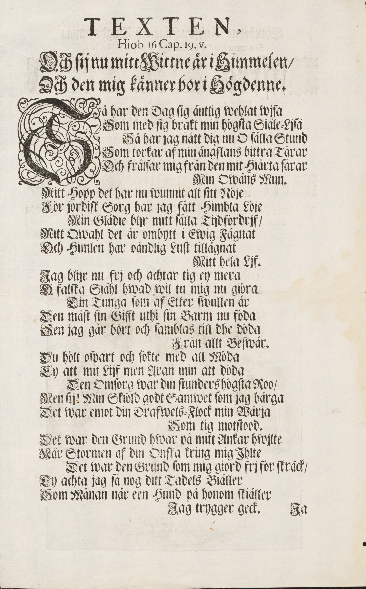
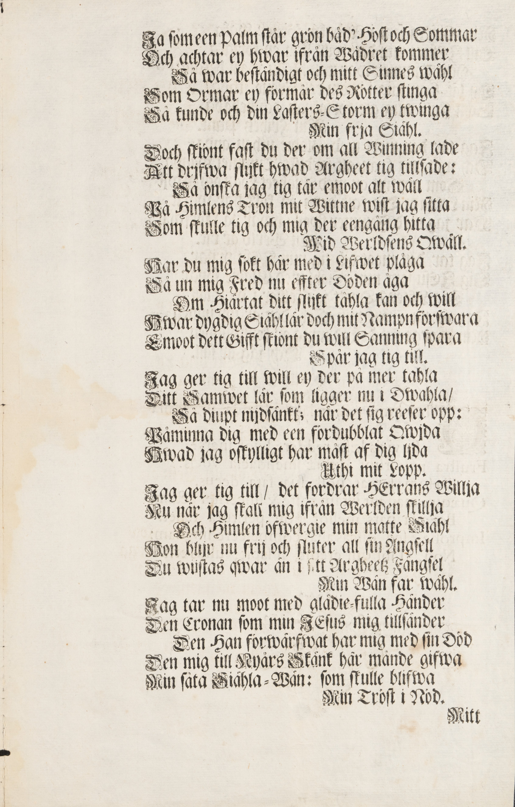
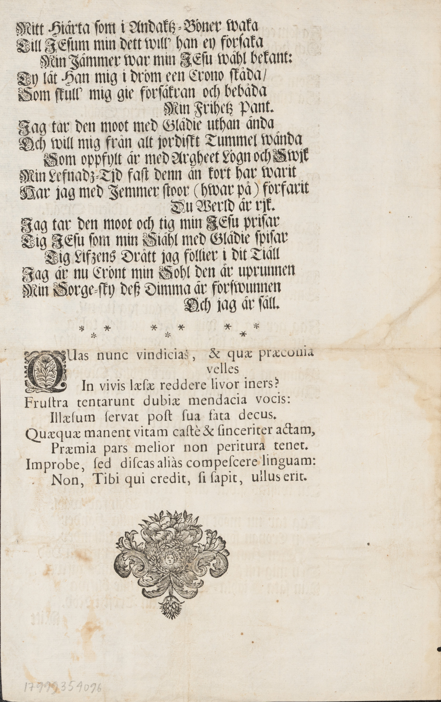

| Faksimil | Text |
|---|---|
 |
Den
|
 |
TEXTEN,
Hiob 16 Cap. 19. v.
Och ſij nu mitt Wittne är i Himmelen /
Och den mig känner bor i Högdenne.
Så har den Dag ſig äntlig wehlat wiſa
Som med ſig brakt min högſta Siäle-Ljſa
Så har jag nått dig nu O ſälla Stund
Som torkar af min ängſlans bittra Tårar
Och frälſar mig från den mit Hiärta ſårar
Min Owäns Mun
Mitt Hopp det har nu wunnit alt sitt Nöje
För jordiſk Sorg har jag fått Himbla Löje
Min Glädie bljr mitt ſälla Tijdfördrjf /
Mitt Qwahl det är ombytt i Ewig Fägnat
Och Himlen har oändlig Lust tillägnat
Mitt hela Ljf.
Jag blijr nu frj och achtar tig ey mera
O falſka Siähl hwad wil tu mig nu giöra
Tin Tunga som af Etter ſwullen är
Den måst ſin Gifft uthi sin Barm nu föda
Sen jag går bort och ſamblas till dhe döda
Från allt Beſwär.
Du hölt oſpart och ſökte med all Möda
Ey att mit Lijf men Aran min att döda
Den Omſorg war din ſtunders högſta Roo /
Men ſij! Min Skiöld godt Samwet ſom jag bärga
Det war emot din Drafwels-Flock min Wärja
Som tig motstood.
Det war den Grund hwar på mitt Ankar hwjlte
När Stormen af din Onſka kring mig Ihlte
Det war den Grund som mig giord frj för ſträck /
Ty achta jag ſå nog ditt Tadels Bieller
Som Månan när een Hund på honom ſkiäller
Jag trygger geck.
Ja |
 |
Ja ſom een Palm ſtår grön båd' Höſt och Sommar
Och achtar ey hwar ifrån Wädret kommer
Så war beſtändigt och mitt Sinnes wähl
Som Ormar ey förmår des Rötter ſtinga
Så kunde och din Laſters-Storm ey twinga
Min frja Siähl.
Doch ſkiönt faſt du der om all Winning lade
Att drifwa ſlijkt hwad Argheet tig tillsade:
Så önſka jag tig tär emoot alt wäll
På Himlens Tron mit Wittne wiſt jag ſitta
Som ſkulle tig och mig der eengång hitta
Wid Werldſens Qwäll.
Har du mig ſökt här med i Lifwet plåga
Så un mig Fred nu efter Döden åga
Om Hiärtat ditt ſlijkt tåhla kan och will
Hwar dygdig Siähl lär doch mit Nampn förſwara
Emoot dett Gifft ſkiönt du will Sanning ſpara
Spår jag tig till.
Jag ger tig till will ey der på mer tahla
Ditt Samwet lär som ligger nu i Dwahla
Så diupt nijdſänkt; när det sig reeſer opp:
Påminna dig med een fördubblat Qwjda
Hwad jag oskylligt har måſt af dig ljda
Uthi mitt Lopp
Jag ger tig till / det fordrar HErrans Willja
Nu när jag skall mig ifrån Werlden ſkillja
Och Himlen öfwergie min matte Siähl
Hon blijr nu frij och ſluter all sin Ängſell
Du wijſtas qwar än i ſitt Argheetʒ Fängſel
Min Wän far wähl.
Jag tar nu moot med glädie-fulla Händer
Den Cronan som min JEſus mig tillſänder
Den Han förwärfwat har mig med ſin Död
Den mig till Nyårs Skänk här månde gifwa
Min ſåta Siähla-Wän: ſom skulle blifwa
Min Tröſt i Nöd.
Mitt |
 |
Mitt Hiärta ſom i Andaktʒ-Böner waka
Till JEſum min dett will' han ey förſaka
Min Jämmer war min JEſu wähl bekant:
Ty lät Han mig i dröm een Crono ſkåda /
Som ſkull' mig gie förſäkran och bebåda
Min Frihetʒ Pant.
Jag tar den moot med Glädie uthan ända
Och will mig från alt jordiſkt Tummel wända
Som oppfylt är med Argheet Lögn och Swjk
Min Lefnadʒ-Tjd fast denn än kort har warit
Har jag med Jemmer ſtoor (hwar på) förfarit
Du Werld är rjk.
Jag tar den moot och tig min JEſu priſar
Tig JEſu ſom min Siähl med Glädie ſpiſar
Tig Lifʒens Drått jag föllier i dit Tiäll
Jag är nu Crönt min Sohl den är uprunnen
Min Sorge-ſky deß Dimma är förſwunnen
Och jag är ſäll.
(Några asterisker bildar en skiljelinje.)
QUas nunc vindicias, & quæ præconia
velles In vivis læſæ reddere livor iners?
Fruſtra tentarunt dubiæ mendacia vocis:
Illæſum ſervat poſt ſua fata decus.
Quæquæ manent vitam caſtè & ſinceriter actam,
Præmia pars melior non peritura tenet.
Improbe, ſed diſcas aliàs compeſere linguam:
Non, Tibi qui credit, ſi ſapit, ullus erit.
(En liten blomsterdekoration. I mitten omgärdad av en lagerkrans syns ett lysande kvinnoansikte.) 17999354096
|
{kind=link}
{kind=link}
{kind=link}
{kind=link}